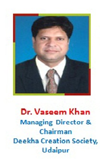

Ravindra Nath Tagore P.G.College
Near MataJi Temple, Highway Road, Th. Kapasan
Distt. Chittorgarh (Raj )

Dr. Vaseem Khan (MA- Philosophy & Public Administration, PG Diploma in Journalism,Human rights , Good
Governance and Yoga, LLB, Ph.D. (Topic- Nature of samadhi in Indian Philosophical perspective with special
reference to Buddha & yoga philosophy).
�Dr. Khan, Managing Director, R.N.T. College, Kapasan & Chittorgarh is a Young, Energetic and Dynamic person.
Being from a Muslim society, he wanted upliftment of downtrodden and hardworking people of muslim class along
with the other weaker sectors of society.It is his lifelong aim & mission to provide education to all masses (including
the Muslims) that are the most backward in the field of education in comparison.He always had an inclination to
provide free, fair, best education as well as financial support to all the poor and needy children�s/students of muslim
and other societies so that they can have equal standing in today�s society.�
JOURNEY
- 1999 VICE-PRESIDENT Central Students Union, Mohan Lal Sukhadia University, Udaipur (Raj.)
- 2001 PRESIDENT Central Students Union, Mohan Lal Sukhadia University, Udaipur (Raj.)
- 2005 � 2010 WARD MEMBER (PARSHAD) Nagarpalika Kapasan Dist. Chittorgarh(Raj.)
- Presently SECRETARY District Kho-Kho Association, Chittorgarh
- PRESIDENT Lions Club, Kapasan, Distt- Chittorgarh
- Secretary Vision & Tammana Society, Udaipur and also associated with various social organizations.
After being elected as a president of central student union of MohanLal Sukhadia University,Udaipur(Raj.) in 2001, he decided to put his life
and efforts towards educating masses in this area, as of his belongings to Kapasan in Rajastahan. He always felt and understood the need of a
college at Kapasan. In regard to that, in year 2002, he founded Deeksha Creations Society under which started R.N.T. P.G. College with
initially B.A. and B.Com. Courses from the session 2002-2003 onwards. College was inaugurated by honorable Governor of Rajasthan Shri
Anshuman Singh Ji. This was the beginning of my journey. The Journey which started in 2002 has covered several mile stones till this date �
A brief over view of various institutions established one by one during the course of thirteen years are �
- 2003: R.N.T. Law college was established at district headquarter, Chittorgarh
- 2004:Degree college at district headquarter, Chittorgarh
- 2005:B.Ed. colleges are in Dabok, Udaipur and in Chittorgarh
- 2006:B.Ed., Shiksha Shastri College at district headquarter, Chittorgarh
- 2008:STC college at district headquarter, Chittorgarh
- 2012:A course in Master of Computer Application was started with establishment of R. N. T. Institute of Technical Studies. A play group school �BACHPAN� was also started at Kapasan campus.
- 2013:Deeksha International School up to class X with CBSE courses was established along with R. N. T. College of Agriculture.
- 2015:College offering B.A., B.Ed. & B.Sc. B.Ed. courses and STC Girls were started at both Kapasan and Chittorgarh.
- 2016-17:Opening two year new courses � M.Sc. Physics, M.Sc. Industrial Chemistry, M.Sc. Information Technology.
- 2016-17:Opening new courses � CA-CPT Coaching and RS-CIT Computer Certification.
We were and are still pioneer and exclusive after Mohan Lal Sukhadiya University, Udaipur in Rajasthan to provide Bacholar of arts (B.A.) in all streams including fine arts.
We are systemically and strategically recruiting dedicated and highly qualified faculty and developing our network to increase our presence in the fields of Law, Computer science, Arts, Commerce & Science. Our efforts will not go unnoticed and as we were bestowed awarded with many awards in recognition over a journey of these years .
With our academic foundation firmly grounded in excellence, we are now becoming more cautious in implementing course curriculum, teaching programs and out reach programs. Hence, at R.N.T. we are constantly challenging ourselves to integrate with the need of our students & their future. Nothing at R.N.T. is taken for granted. Nothing is accepted simply because of the past. Evaluation, of teaching courses is done on continuous cycle to ensure that the education given is the best and absolutely relevant to the need and to challenging environment.
I would like to extend my sincere gratitude to each and every one of our stake holders, society members, academic partners, alumni, faculty members and students who have believed in us and supported us through our journey of thirteen years to become a reputed institute. While penning this note, as I reflect on the year gone by, It gives me great pleasure to recount milestones of Deeksha Creations Society that have equipped us to remain at the forefront of the world of education.
Wishing you all the very best for all future endeavors.Dr. Vaseem Khan
Managing Director & Chairman,
Deeksha Creation Society, Udaipur (Raj.)